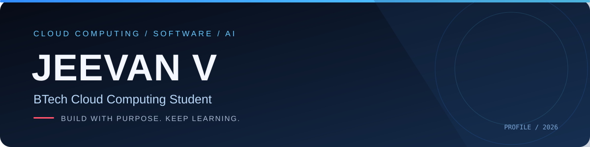
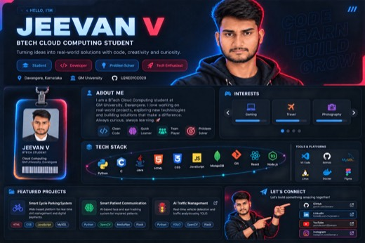

Jeevan V
BTech Cloud Computing StudentAbout
I’m a BTech Cloud Computing student who enjoys learning new technologies and building practical software projects. My interests include web development, cloud technologies, Python, and computer vision.
🎓 BTech — Cloud Computing
💻 Software development and AI
🚀 Learning by building projects
Technical Skills
ProgrammingPython, C, JavaScriptWebHTML, CSS, Node.js, ExpressDatabasesMySQL, MongoDBAI / VisionOpenCV, YOLO, MediaPipeToolsGit, GitHub, VS Code
Featured Projects
Smart Cycle Parking System
Web-based cycle slot management, booking, and payment workflow.
HTMLCSSJavaScriptMySQLSmart Patient Communication System
Assistive communication prototype using facial movement and eye-blink detection.
PythonOpenCVMediaPipeAI Traffic Management
Computer-vision project focused on vehicle detection and traffic analysis.
PythonYOLOOpenCV